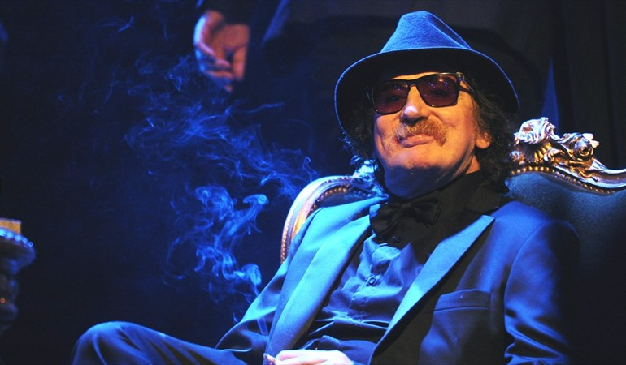

Charly García
Carlos Alberto García Moreno (nacido en Buenos Aires, 23 de octubre de 1951), conocido como Charly García, es músico, cantante, intérprete, compositor y productor argentino de rock.
Por Giovanna Suarez
Es el primogénito de una familia porteña de buena posición económica, del barrio de Caballito.En el año 1956 (a los cinco años de edad) inició sus estudios de música con la profesora Julieta Sandoval, una docente estricta y rigurosa que le enseñó a tocar música clásica. A los doce años se recibió de profesor de teoría y solfeo. Le ofrecieron una beca para ir a estudiar dirección de orquesta a Italia pero él la rechazó, contra las opiniones de sus padres.El chico amaba la música clásica y odiaba lo popular.
PRIMERAS
INFLUENCIAS
MUSICALES
Los Beatles constituyeron un cambio radical para su vida, su música le abrió su espectro musical para siempre. Con ellos, llegaron también los Rolling Stones, Bob Dylan, The Byrds y The Who, entre otros. Allí acabó su carrera de músico clásico. Pidió a gritos que le compraran una guitarra eléctrica, se dejó el pelo largo y comenzaron las peleas con su padre, quien esperaba que se convirtiera en concertista o en ingeniero. Esta relación nunca más lograría componerse.
Yo si no hay música , aunque sea de la televisión,es como que soy un pescado: la música es mi oxígeno
Charly García
Yo si no hay música , aunque sea la televisión,es como que soy un pescado: la música es mi oxígeno
AUTOR
DESARROLLO
DE SU CARRERA
MUSICAL
Con catorce años formó su primer grupo, To Walk Spanish, en donde interpretaba versiones de The Beatles y The Rolling Stones; luego formó Sui Generis, junto a Nito Mestre y Carlos Piegari. Con este grupo editó su primer disco, Vida, que salió a la venta en 1972. Mas adelante, con la separación de sui generis, forma PorSuiGieco, la maquina de hacer pajaros (1975),Serú Girán(1978), y luego de pasar por varias bandas y compañeros como andres calamaro, fito paez y pedro Aznar, se decidió a grabar definitivamente en solitario, y fruto de este trabajo fue el elepé Parte de la religión, que vio la luz en 1987. En 1991, con Pedro Aznar, grabó Tango 4, y un año más tarde volvieron a reunirse los integrantes de Serú Girán, reencuentro del que nació Serú Girán ´92. En 1994 compuso una ópera-rock llamada La hija de la lágrima. Un año más tarde volvió a la carga con Estaba en llamas cuando me acosté y, en ese mismo año, grabó un unplugged para la MTV.
PREMIOS Y
RECONOCIMIENTOS
OTORGADOS
Ha ganado varios premios a lo largo de su trayectoria como el Grammy a la Excelencia Musical en Las Vegas, otorgado por la Academia Latina de la Grabación, que entrega los Premios Grammy Latinos; el Premio a la Trayectoria en la entrega de los Premios Clarín Espectáculos 2009 y el Premio Konex en varias oportunidades, incluyendo el de platino en 1985 como «mejor instrumentista» y «conjunto de rock» de la historia en la Argentina. En 2010 fue declarado Ciudadano Ilustre de la Ciudad Autónoma de Buenos Aires por la Legislatura Porteña y en 2013 recibió el título de Doctor Honoris Causa de la Universidad Nacional de General San Martín. En los Premios Gardel 2018 (organizado por la Cámara Argentina de Productores de Fonogramas y Videogramas- CAPIF) se impuso en seis de los siete categorías en los que estaba nominado, incluida Álbum del Año por su disco «Random». Tras 15 años, el ex Sui Generis volvió a ganar la estatuilla de oro, siendo esta la tercera vez que recibe esta distinción.